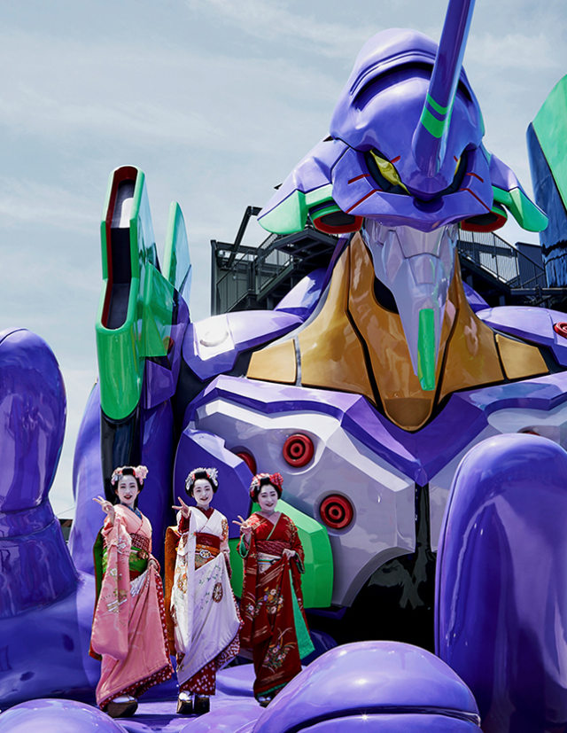
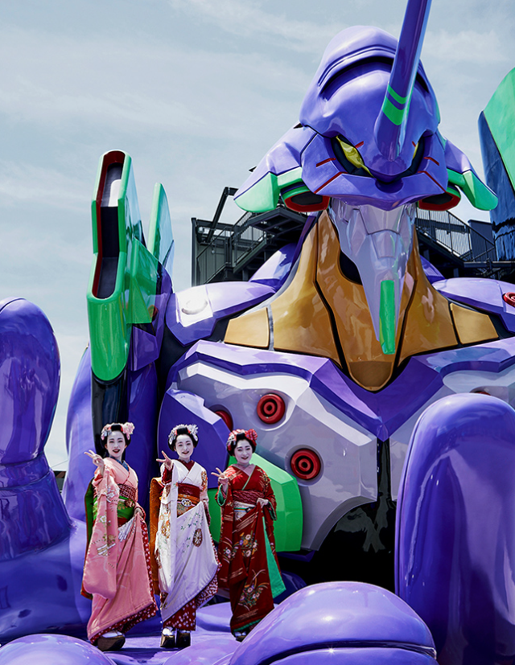

全力で遊べる 楽しいお店を見つけよう
24時間営業のレジャーランドで、 クレーンゲームや卓球など 様々な遊びが楽しめる施設となっております。

高崎駅から徒歩五分で、 様々なお店の揃った ショッピングモールです。
JR高崎駅から徒歩3分の老舗百貨店です。 幅広い品揃えに加え、多くのブランドを 取りそろえた地域密着型店舗です。

JR高崎駅から徒歩10分の劇場です。 一階には「シアターカフェ」、 二階には劇場などがあります。